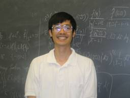

(in no particular order)
The Erdos/Falconer conjecture bunch: the following individuals and I have been on a holy crusade to solve the Erdos/Falconer distance conjecture and its variants.

Izabella Laba, University of British Columbia, the author of the famous
put-down: "... do you have (fill in the blank) in Columbia, Missouri?..."

Misha Rudnev, University of Bristol, the man who transcends generations, fields of mathematics, and
many other things as well...

Steve Hofmann, University of Missouri, an invited speaker at the 2006 International Congress of Mathematics,
represented by St. Bernard in my legendary epic about the MU mathematics department, the one that begins
with the words, destined for immortality: "A long time ago in the place called Mizzou, there was a large and
prosperous zoo...".

George Arutyunyants, University of Missouri. He assures me that rumors that Andre Agassi is his first
cousin are not true... George was photographed next to a brick wall to drive the point across of what
will happen if he does not finish his thesis soon... :)

Sergei Konyagin, Steklov Institute, Salem Prize winner

Julia Garibaldi, Georgia Institute of Technology. Julia is my partner in crime in the high school summer program...
My Fuglede conjecture collaborators:

Steen Pedersen, Wright State University, the man who convinced his kids not to ask for more toys by telling them that they were made by political prisoners while waiting for their organs to be harvested for rich folks in the West!

Mihalis Kolountzakis, University of Crete. Is he an analyst, combinatorist, number theorist? Lord only
knows... though I have a couple of colleagues always eager to give the man upstairs a few pointers...
Mihalis' only weakness as a scientist is that he does not yet recognize the superiority of Mac laptops. He
refers to them as "appliances"...

Terry Tao, University of California at Los Angeles, Salem Prize winner. Not many people realize how dangerous it is to play Illuminati with this man!
My lattice points/averaging operators collaborators:

Kimberly Kinateder, Wright State University, the person who convinced me that statisticians are people too!

Eric Sawyer, McMaster University, my oldest and most frequent collaborator. It is quite possible that I would not be a mathematician today if I had not met Eric.

Andreas Seeger, University of Wisconsin-Madison. Along with Eric Sawyer, Andreas kept me afloat mathematically in the first few years of my career. My gratitude to both of these individuals is immeasurable.

Leonardo (Maestro) Colzani, a mathematician, opera aficionado, and a big fan of Don Juan, in every way... :)

Giancarlo Travaglini, University of Milan. The first man to break the sound barrier in a passanger van...

Luca Brandolini, University of Bergamo. Luca loves beer!

Nets Katz, University of Indiana, the man determined to convince minkeys to prove theorems!

Anatoly Podkorytov, the author of a beautiful theorem on average decay of the Fourier transform in the plane.
My restriction theory collaborators:

Guozhen Lu, Wayne State University, one of the most entertaining harmonic analysts I know. Guozhen and I met in the middle of a large cornfield in Ohio where we spent three happy years together before I departed in the direction of the White House, and Guozhen left for the land of General Motors.

Laura DeCarli, Florida International University. Laura was my first collaborator and a mathematics sister. She
also introduced me to the wonders of the Italian Republic!